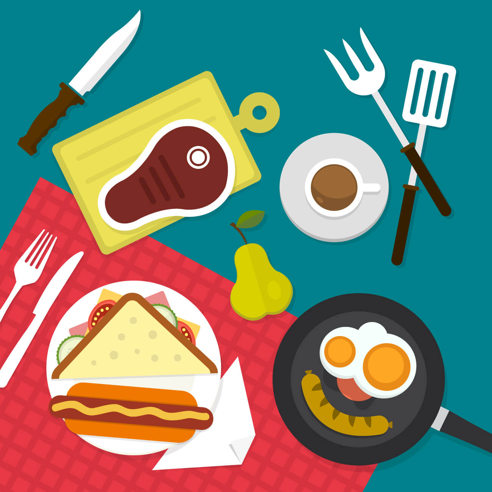

Ravinto – Kehityksen polttoaine

Miten syödä lihaskasvua varten?
Ravinto on 70 % tuloksista. Voit treenata kuin peto, mutta jos syöt kuin hiiri, et kasva. Lihaskasvu vaatii kaksi asiaa: **anabolisen tilan** (kaloriylijäämä) ja **rakennusaineita** (proteiini).
Kalorien laskeminen: Peruskulutus + kasvu
Laske arvioitu kulutuksesi ja lisää siihen n. 300 kcal. Jos painosi ei nouse viikossa n. 0.2–0.5 kg, lisää kaloreita. Jos paino nousee liian nopeasti, vähennä hieman hiilihydraatteja.
Proteiinit
Lihasten rakennusaine.
Lähteet: Kana, nauta, lohi, kananmuna, heraproteiini, soija, tofu.
Hiilihydraatit
Treeniteho ja palautuminen.
Lähteet: Kaurahiutaleet, täysjyväriisi, peruna, bataatti, hedelmät.
Rasvat
Hormonitoiminta (testosteroni).
Lähteet: Avokado, pähkinät, oliiviöljy, omega-3 rasvahapot.
Tärkeät faktat ja myytit
- Myytti: Proteiini pitää syödä 15 min treenin jälkeen.
Fakta: Kokonaisproteiinimäärä päivän aikana on tärkeämpää, mutta proteiini treenin ympärillä auttaa palautumisessa. - Fakta: Nesteytys on kriittistä. Jo 2 % nestehukka laskee voimatasoja huomattavasti.
- Fakta: Kreatiinimonohydraatti on tutkituin ja turvallisin lisäravinne voiman ja massan kasvuun.